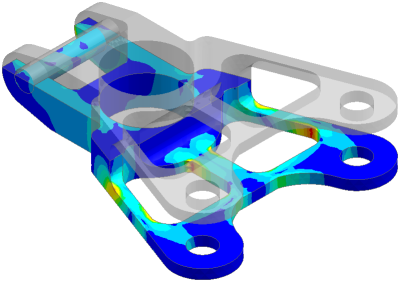

Use cutting planes to create cutaway and cross section displays of results. Cutting plane displays are useful for visualizing the distribution and direction of results in the interior of solid models.
